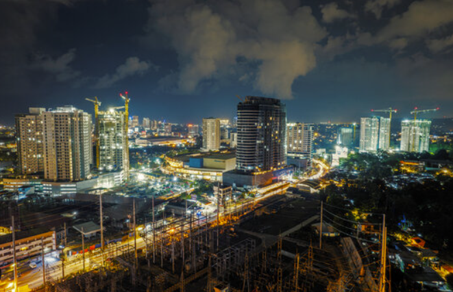
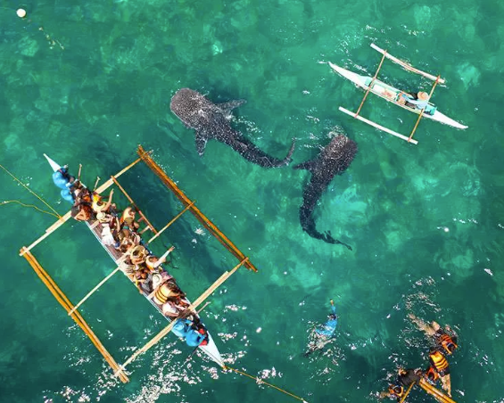

Davao
Chocolate Hills
Cebu



Davao is a city in the Philippines known for its cleanliness, safety, and strict regulations. It is a major economic hub in Mindanao, featuring diverse cultures, vibrant street markets, and the iconic Mount Apo, the country's highest peak.
Chocolate Hills are a unique geological formation in Bohol, Philippines, consisting of around 1,200 cone-shaped hills. During the dry season, the grass-covered hills turn brown, resembling chocolate, giving them their name. They are a popular tourist attraction and a UNESCO World Heritage site.
Cebu is an island province in the Philippines known for its historical significance, vibrant festivals, and beautiful beaches. The province includes Cebu Island and many smaller islands. Cebu City, the provincial capital, is a bustling metropolis with a mix of modern and colonial architecture. Cebu is a popular tourist destination, offering a rich cultural experience and outdoor adventures.